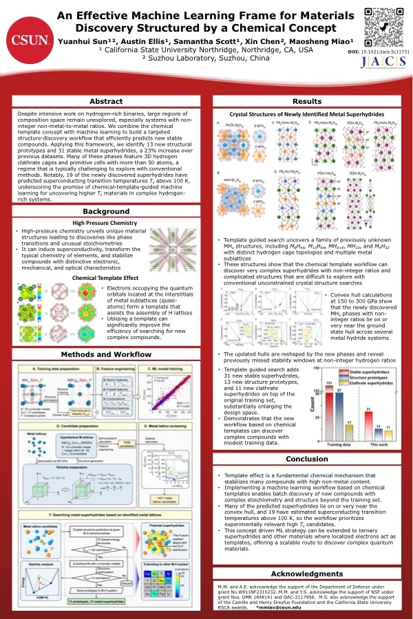
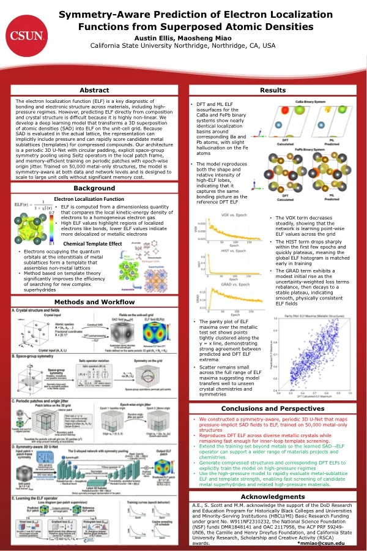
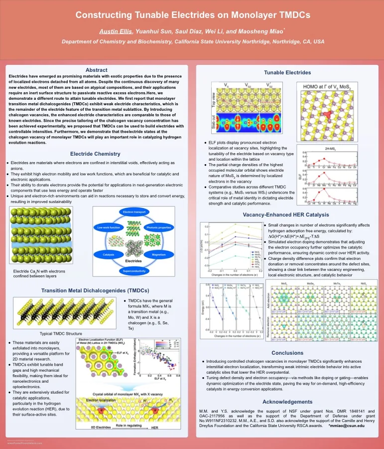
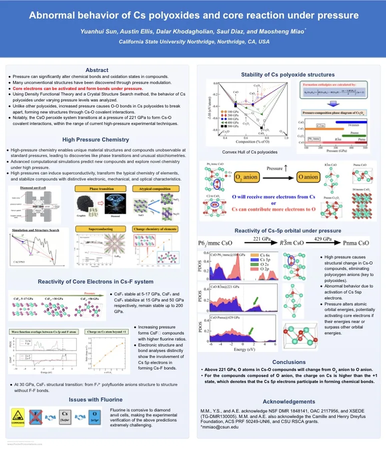
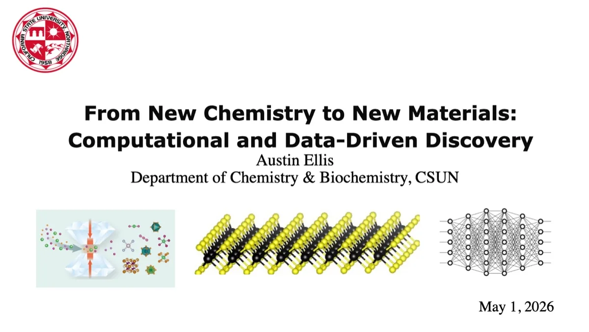
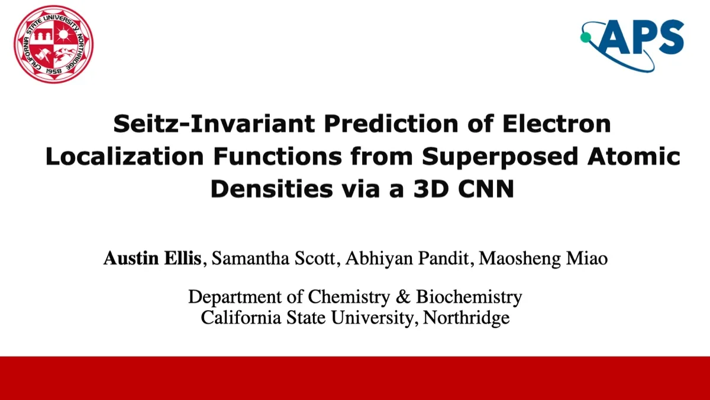
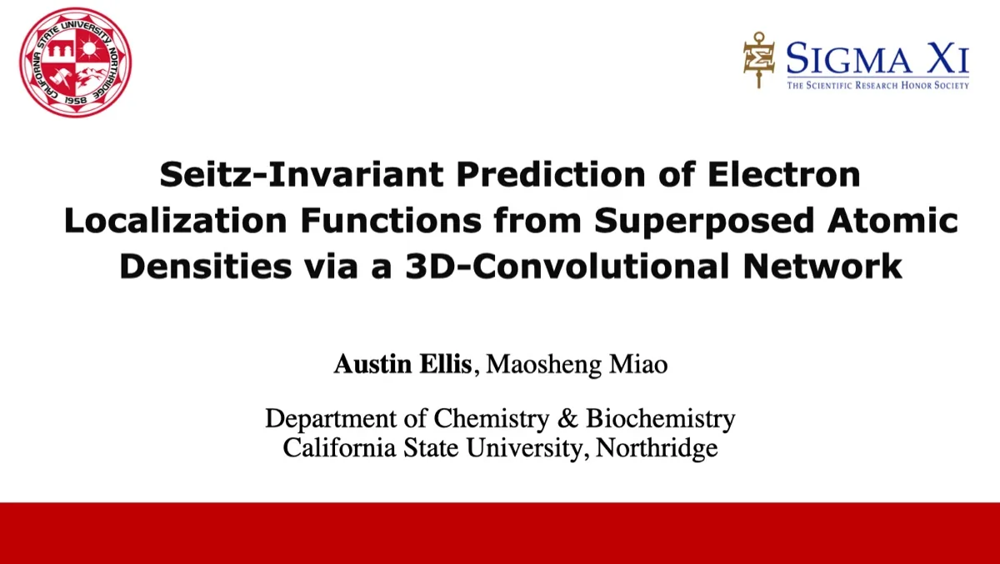
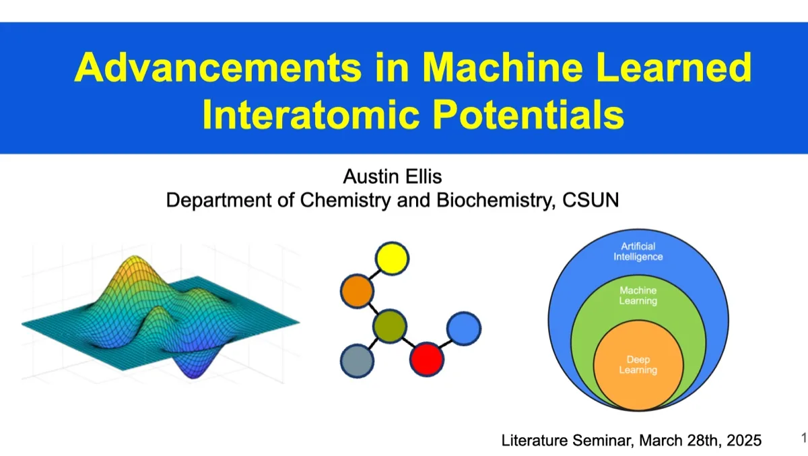

posters/superhydrides NeurIPS AI4Mat 2025 · GRC 2026
ML batched superhydrides
Template-guided machine learning for discovering stable complex metal superhydrides and prioritizing promising high-pressure superconducting candidates.
Conference posters, 2025–2026
austin ~/austin-ellis $ ls talks/posters/

posters/superhydrides NeurIPS AI4Mat 2025 · GRC 2026
Template-guided machine learning for discovering stable complex metal superhydrides and prioritizing promising high-pressure superconducting candidates.

posters/elf-3dcnn NeurIPS AI4Mat 2025 · GRC 2026
A periodic, symmetry-aware deep-learning model that predicts electron localization functions from superposed atomic densities for fast electronic-structure screening.

posters/tmdc-electrides
Vacancy-controlled electride behavior in 2D transition-metal dichalcogenides and the impact of localized interstitial electrons on catalytic hydrogen-evolution trends.

posters/cs-polyoxides
First-principles structure-search results showing pressure-induced breakdown of polyoxygen motifs in Cs-O compounds and activation of Cs core-level electrons in high-pressure bonding.
Talks and seminar decks, 2025–2026
austin ~/austin-ellis $ ls talks/slides/

slides/thesis-defense CSU Northridge · 2026-05
Thesis defense deck for From New Chemistry to New Materials: Computational and Data-Driven Discovery, connecting quasi-atom chemistry, 2D electrides, high-pressure superhydrides, and ML-accelerated materials discovery.

slides/aps-2026 Denver · 2026-03
APS Denver talk on Seitz-invariant prediction of electron localization functions from superposed atomic densities using a 3D CNN.

slides/sigma-xi-2025 2025
Research presentation on symmetry-aware electron-localization prediction and machine-learning-guided materials discovery workflows.

slides/lit-seminar-2025 CSUN · 2025-03
Literature review seminar covering recent computational and machine-learning advances relevant to electronic-structure modeling in materials chemistry.